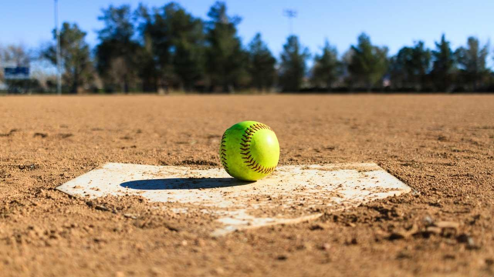
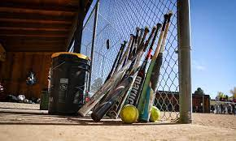
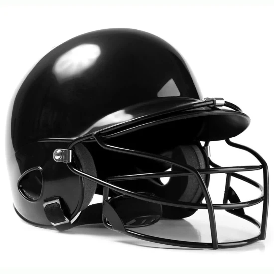
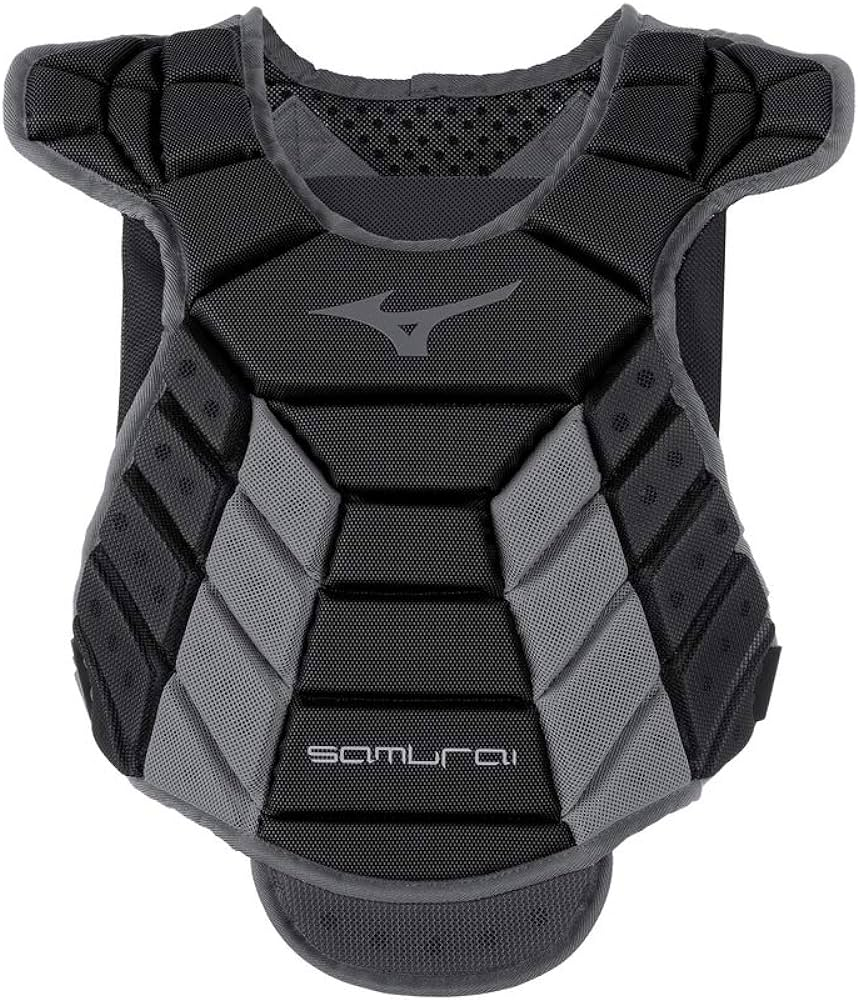
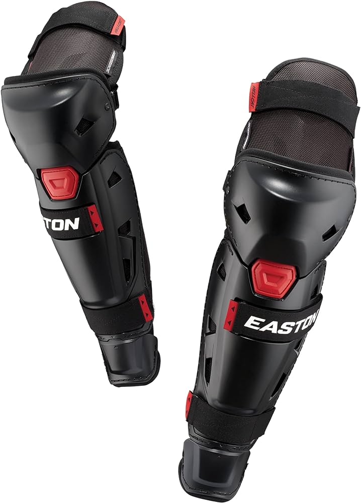
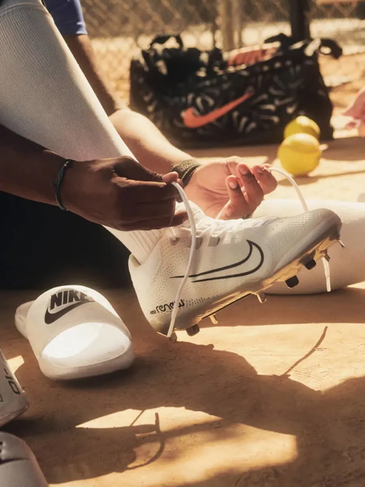

Benda yang wajib ada dalam permainan softball adalah bola. Bola softball berukuran lebih besar daripada bola baseball. Bola softball memiliki keliling 27,9-30,5 cm dan beratnya sekitar 178,9-198,4 gram. Bola softball terbuat dari kulit sintetis dan berwarna kuning atau putih.Ciri khas bola ini ialah terdapat jahitan yang terlihat jelas di sekelilingnya.
Perlengkapan yang tidak kalah penting adalah tongkat pemukul atau disebut bat. Tongkat pemukul digunakan untuk memukul bola yang dilempar oleh pelempar atau pitcher. Biasanya tongkat ini memiliki panjang 86,5 cm dan terbuat dari kayu, besi, atau aluminium.
Pelindung tangan atau glove pada permainan softball lebih besar dan tebal. Glove digunakan untuk pemain pertahanan, posisi catcher, dan first baseman agar lebih mudah dalam menangkap bola. Glove juga berguna untuk melindungi tangan dari rasa sakit dan risiko cedera saat menangkap lemparan yang kencang dan keras. Pelindung tangan ini biasanya dibuat dari bahan kulit yang tebal dengan ukuran 38 x 38 cm dan berat 283 gram.

Untuk menghindari risiko lembaran bola ke kepala, pemain yang berposisi sebagai batting dan catcher wajib menggunakan helmet khusus yang disebut light guard. Helmet tersebut biasanya juga dilengkapi dengan pelindung wajah agar lebih aman.
Agar terhindar dari lemparan bola yang mengenai bagian dada atau perut, seorang catcher harus menggunakan body protector.
Pelindung kaki ini berbentuk dekker pada sepak bola, tapi versi yang lebih besar. Pelindung kaki ini melindungi seluruh bagian kaki mulai dari ujung jari sampai tempurung lutut. Tujuannya agar menghindari risiko cedera atau sakit pada kaki jika catcher terkena bola liar.
Kasut pool atau cleats biasanya dibuat dari kulit halus atau kanvas. Bagian sol kasut cenderung rata dan dibuat dari bahan getah. Namun, ada juga kasut dengan sol logam atau plat yang terletak di bagian tumit
